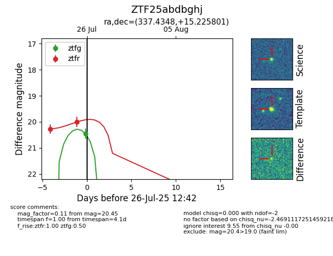

Target ZTF25abdbghj at 2025-07-26 12:42, see:
FINK: fink-portal.org/ZTF25abdbghj
Lasair: lasair-ztf.lsst.ac.uk/objects/ZTF25abdbghj
ALeRCE: alerce.online/object/ZTF25abdbghj
alt names
ZTF25abdbghj (ztf,fink)
coordinates:
equatorial (ra, dec) = (337.4348,+15.22580)
galactic (l, b) = (79.5722,-35.45218)
photometry
last ztfg=20.45, ztfr=20.01
1 ztfg, 2 ztfr detections
